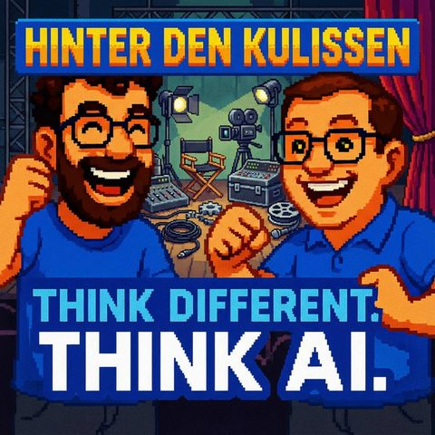

Hinter den Kulissen von Think Different! Think AI!
Read in EnglishThemen Automatisierung und Tools
33 Sekunden zur Folge, bevor du liest.
Worum es geht
Unser Podcast-Workflow mit Riverside, Auphonic und Manus
Wie baut man eigentlich eine Podcast-Folge, wenn der zweite Host im Urlaub ist? Mark übernimmt in dieser Sonderfolge solo und nimmt euch mit hinter die Kulissen von Think Different, Think AI. Statt der gewohnten Doppelmoderation gibt's diesmal einen Werkstattbericht: welche Tools und Workflows den Podcast tatsächlich am Laufen halten und wo KI wirklich hilft und wo sie einfach nur ein weiteres Werkzeug im Werkzeugkasten ist.
Los geht's beim Cover: Für jede Folge sitzt Jens mit Manus zusammen und lässt das Episoden-Cover anpassen, inklusive Wiedererkennungswert wie der Pixel-Grafik im Monkey-Island-Stil und thematischen Symbolen je nach Thema. Aufgenommen wird über Riverside.fm, das virtuelle Studio, in dem Gäste per Browser oder App dazugeschaltet werden. Der eigentliche Clou beim Schnitt: Riverside zeigt das gesprochene Wort als Transkript pro Sprecher an, sodass sich Versprecher per Textmarkierung statt per Wellenform herausschneiden lassen, inklusive AI Voice Cloning, falls ein Wort oder ganzer Satz neu generiert werden muss.
Danach kommt die Feinarbeit: Auphonic übernimmt Rauschunterdrückung, Pausen-Kürzung und Lautstärke-Angleichung und schneidet dabei laut Mark klar besser ab als Adobe Podcast, das sich vor allem bei Atemgeräuschen und unnötigen Pausen schwertut. Bei Gästefolgen wird der Workflow komplizierter: Jede Tonspur läuft einzeln durch Auphonic, wird über Ferrite Recording Studio wieder synchron zusammengeführt und läuft danach als Gesamtspur noch einmal durch Auphonic, diesmal nur zum Pausen-Kürzen.
Fertig geschnitten landet alles bei Podigee: Titel, Untertitel, Shownotes und Cover werden gepflegt, die automatische Transkription aktiviert, und bei Gästefolgen gibt's vor der Veröffentlichung noch eine Freigabeschleife. Ehrlich wird's bei den Zahlen: Mark nennt konkrete Download-Werte einzelner Folgen (u.a. „Boss Level KI" und „KI als Kunde") und die Gesamtzahl Richtung 750 Downloads: kein Reichweiten-Hype, sondern eine nüchterne Standortbestimmung.
Richtig spannend wird's beim Marketing: Neben klassischen LinkedIn-Posts der beiden Hosts lässt Mark einen KI-Agenten das eigene Podcast-Transkript auslesen, daraus Schlagworte extrahieren und passende Social-Media-Beiträge zu genau diesen Themen suchen, um dort wertschätzende Kommentare mit Link zur Folge zu hinterlassen. Ein kleines, aber konkretes Beispiel dafür, wie sich Content-Recycling automatisieren lässt, ohne dass gleich ein ganzes Marketing-Team dahinterstehen muss.
Zum Schluss ein Blick auf Marks andere KI-Podcast-Experimente, die unterschiedlich weit auf der Automatisierungsskala liegen: die Comedy-Show 404 Lachen nicht gefunden, die Lernreise Kopf und KI, die fiktiven Kriminalfälle von Schattenakte, das Prompting-Format Prompt Intelligence (dort zeigen sich inzwischen die Grenzen älterer Prompts bei deutsch-englischen Sprachwechseln) sowie das englischsprachige AI Revolution im Steve-Jobs-Keynote-Stil. Think Different, Think AI selbst bleibt dabei die Ausnahme: komplett von Hand produziert, KI-generierte Stimmen gibt's hier nur im Intro (einst mit Suno, MusicGPT und ElevenLabs erstellt).
Transkript
00:00:00Willkommen bei Think Different, Think AI, dem Podcast von Mark und Jens.
00:00:07Zwei technologieverliebte Köpfe, die nicht nur über künstliche Intelligenz reden, sondern sie leben.
00:00:14Hier gibt es klare Einordnungen, echte Praxiseinblicke und einen frischen Blick auf das, was möglich ist.
00:00:20Verständlich, kritisch und immer mit einem Augenzwinkern.
00:00:24KI zum Nachdenken, zum Schmunzeln und vor allem zum Mitreden.
00:00:33Herzlich Willkommen bei einer neuen Folge von Think Different, Think AI.
00:00:38Tja, was soll ich euch sagen? Wir haben uns vor einiger Zeit unterhalten mit unseren Gästen.
00:00:44Okay, wir hatten nur einmal einen Gast, muss man korrigieren an der Stelle.
00:00:47Mit dem René über das ganze Thema, wie wirkt sich KI AI auf Führungen von Mitarbeitern aus,
00:00:53aus auf das organisatorische Miteinander und Jens und ich hatten auch eine Folge, in der wir darüber
00:01:00gesprochen haben, ob KI Anspruch auf Urlaub hat. Nun ist euch bestimmt auch gefallen. Ich spreche
00:01:07hier alleine. Ich kann auch gar nicht an Jens das Wort übergeben, weil auch wenn Jens eine
00:01:12reale Person ist, hat er auch realen Urlaub und wir haben uns überlegt, was könnten wir in einer
00:01:18weiteren Folge für euch bringen, damit die Wartezeit bis Jens wieder zurück ist, nicht
00:01:25so lang ist. Und da haben wir uns überlegt, dass ich euch ein bisschen was darüber erzähle,
00:01:29wie dieser Podcast entsteht. So ein bisschen die technischen Hintergründe. Die, lasst
00:01:38uns anfangen mit beispielsweise dem Cover. Jens setzt sich mit Manus hin und macht uns für
00:01:45jede Folge ein erhegendes Cover und gibt quasi manus die Anweisung, das entsprechende Cover
00:01:52jedes Mal anzupassen, damit mal beispielsweise das Symbol mit der Krawatte für Führung mit
00:01:59KI teilweise hins und ich mit der entsprechenden Pixel-Grafik von früher, ich fühle mich
00:02:06auch immer in Monkey Island, unser Erinnert, generiert wird mit den entsprechenden Episodennummern
00:02:13der Übersicht. Die Aufnahme selbst machen wir mit riverside.fm. Das ist ein schief
00:02:20nicht etabliertes Podcast-Tool, das einem ermöglicht, ein virtuelles Studio einzurichten.
00:02:28In diesem virtuellen Studio kann man Gäste einladen, die sich dann über App oder
00:02:32Browser dazuschalten können. Man kann sagen, wer alles moderationsrecht hat,
00:02:37wer Gast ist, wer nur Zuhörer ist und man bekommt eine sehr intuitive,
00:02:42würde ich sagen, Steuerung zur Verfügung gestellt, um zu sehen, ob beispielsweise die Mikrofone
00:02:48gut ausgerichtet sind. Falls man ein Videopodcast machen will, kriegt man auch hier die Unterstützung.
00:02:53Was an Riverside auch extrem von Vorteil ist, ist die Möglichkeit des Editierens. Klassischer
00:02:59Audioschnitt ist ja wirklich, man hat die Wellenform und versucht dann in dieser Wellenform
00:03:04entsprechende Pausen zu schneiden, Versprecher herauszuholen. Das ist mal mehr
00:03:11oder weniger kompliziert. Zumindest ist es mal für die Menschen, die sich mit
00:03:15Wellenformen nicht so beschäftigen wollen. Und an der Stelle ist Riverside ganz
00:03:20nett, weil Riverside hat an der Stelle die Möglichkeit zu sagen, ich gehe an
00:03:24dir, ich kriege den kompletten gesprochenen Text pro Sprecher
00:03:29Transkriptier dargestellt, ich kann den markieren und ich kann den
00:03:32entfernen. Und schon ist ein Satz unter Umständen um ein Versprecher ärmer. Ich kann während,
00:03:40ich beispielsweise hier einen Monologue halte und falls mir ins Wort fällt oder ich hier ins
00:03:45Wort falle, bin ich auch in der Lage, jeweils andere Tonspuren während jemand spricht aus zu
00:03:51blenden. Und wenn man sich mal komplett verhaspelt hat und es fehlt vielleicht dann ein Satz,
00:03:57damit aus der Konversation wieder etwas Flüssiges wird, kann ich nicht nur Sätze löschen,
00:04:03stille einfügen, sondern ich kann auch mit AI Voice Cloning entsprechende Wörter, Sätze,
00:04:12ganze Abschnitte von Riverside generieren lassen. Ist die Aufnahme dann geschnitten und quasi im
00:04:18Kasten habe ich die Möglichkeit, mir jede Tonspur einzeln oder auch als gesamte
00:04:24Ton-Spur exportieren zu lassen. Und an der Stelle ist da haben wir noch nicht das, was wir quasi
00:04:30euch als Podcast zur Verfügung stellen, weil auch wenn Riffer-Side mehr erlaubt, Audio-Spuren zu
00:04:35schneiden und Texte zu ergänzen und auch eine kleine Stimmverbesserung schon von Haus drin hat
00:04:43und Mikrofon-Steuerung bei der Aufnahme schon hat, ist nichtsdestotrotz die Audioqualität
00:04:49manchmal noch nicht so optimal, sagen muss man so. Außerdem hört man manchmal die Gäste noch so
00:04:55ein bisschen atmen, man hört manchmal noch so Füllwörter und damit das ein bisschen weniger
00:05:01wird und die Stimmen noch ein bisschen klarer werden, die Pausen, die unter Umständen überlegen,
00:05:07entstanden sind, noch ein bisschen kürzer werden und die Atemgeräusche verschwinden.
00:05:11lade ich das Ganze dann danach in auphonic.com. Auphonic.com bietet im kostenlosen Account
00:05:18zwei Stunden Audio Material zu bearbeiten. Man kann auch gegen einen Wurf von Münzen,
00:05:23wie wir es machen, mehr Material da durchschicken. Man kann Audio und Video Dateien hochladen.
00:05:30Und das ist gefühlt eine Wundermaschine, was Audioqualität angeht. Viele von euch haben
00:05:35vielleicht mal von dem AI-Tool Adobe Podcaster gehört. Adobe Podcaster hat den
00:05:42Charme oder die Herausforderung, dass ich die von der Qualität nicht wirklich
00:05:47überzeugt bin. Adobe Podcaster macht mir die Sachen irgendwie, naja, der versucht
00:05:53schon, die Stimme zu isolieren, aber gerade die Atemgeräusche, die
00:05:58unnützten Pausen, da tut sich der Adobe Podcaster schwer, weil das gar nicht
00:06:02macht. Auphonic kann man aus verschiedenen Pre-Sets wählen, man kann die Pre-Sets auch
00:06:10durch eigene Konfigurationen ersetzen und da hat sich wirklich etabliert zu sagen, lösche
00:06:15unnötige Pausen, mache die Stimmen klarer, hebe alles auf einen Level und bearbeite so das
00:06:23Audio-File und das kann man sowohl für das gesamthafte Audio-File machen, als auch für die
00:06:29die einzelnen Tonspuren, um sie dann später zusammenzusetzen. Meistens mache ich das
00:06:33für das gesamte Audio-File, wenn Jens und ich alleine sind. In der Folge mit René habe
00:06:39ich den Workflow ein bisschen angepasst, um das bestmögliche Ergebnis für alle Beteiligten
00:06:43zu kriegen. Bin ich hingegangen und habe jede Tonspur, also die von René, die von Jens
00:06:48und die von mir einzeln durch Auphonic gejagt, in dem Fall aber nicht die, ich
00:06:55jetzt mal Pausen rausschneiden lassen, weil sonst wäre die Audio-Spur ja nicht mehr kompatibel,
00:07:01sondern ich habe einfach nur die Stimmverbesserung gemacht und habe dann einen Schritt gemacht,
00:07:06den ich sonst nicht tue, nämlich das ganze nochmal in eine Anwendung zu überführen,
00:07:10die heißt Ferrite. Ferrite läuft auf iOS und da kann man Tonspuren aneinander ausrichten.
00:07:16Da habe ich dann quasi erst alle Tonspuren einzeln durch Auphonic gejagt, dann über
00:07:22Ferrite wieder verbunden und dann das Ergebnis nochmal durch Auphonic gejagt, aber diesmal mit dem Hinweis, lasst mal alles, was audio ist so, wie es ist.
00:07:31Lösch aber bitte alle unnötigen Pausen.
00:07:35Ja, und wenn das Ergebnis fertig ist, nennt man das oft Podigee. Podigee ist eine Distributionsplattform, die Podcasts entgegen nimmt, also Audio-Dateien entgegen nimmt und
00:07:46distributiert. Distributieren heißt dann zum Beispiel zu euch nach Spotify, Amazon Musik,
00:07:52Apple Podcast, YouTube zu bringen. Das heißt, man lädt die Datei dort hoch. Es gibt eine App oder
00:07:58ein Webinterface. Da kann man das, wie gesagt, als neue Folge zur Verfügung stellen. Man
00:08:04pflegt einen Titel, man pflegt einen Untertitel, man pflegt eine Shownote, lädt das Bild,
00:08:09das ich vorhin erwähnt habe, das Jens Breit stellt hinein. Und dann kann man anhaken,
00:08:14dass Podigee nicht nur die Distribution übernimmt, sondern auch noch mal eine Transkription.
00:08:21Das ist dann der Grund, dass ihr in jedlichen Player oder auch im Webinterface dann auch
00:08:26eine einheitliche Transkription des Podcastes habt, wo ihr dann suchen könnt, wie, wo
00:08:33ist welches Wort gefallen, Texte herauskopieren könnt.
00:08:36Wenn das Ganze dann entsprechend drin ist und wir haben Gäste, wird das Ergebnis
00:08:43dem Gast noch mal zur Verfügung gestellt, zur Freigabe. Jens und ich selbst mach brauchen
00:08:48keine gegenseitige Freigabe mehr. Das heißt, wenn nur wir beide zu Gast sind, wird das Ganze
00:08:52dann online geschaltet. Online-Schalten heißt, dann drückt man bei Podigee auf Publizieren. Man
00:08:57hätte auch ein Datum eingeben können, zu wann der Podcast publiziert werden soll. Das wäre
00:09:02sinnvoll gewesen, Jens, wenn wir hier eine Folge schon voll aufgenommen hätten, hätten wir die
00:09:06nämlich jetzt einfach mal raushauen können. Aber gut. Und dann geht die Folge online.
00:09:10Online heißt aber noch nicht, dass Menschen automatisch wissen, dass es die gibt.
00:09:16Treue höre unseres Podcasts, wenn euch gefällt, gerne Freunden sagen.
00:09:20Wir sammeln gerne noch Abonnenten, bekommen das zwar in ihrem Podcastplayer zur Verfügung gestellt,
00:09:25aber es gibt ja auch noch ganz viele Menschen, die noch gar nicht wissen, dass es uns am Podcast gibt.
00:09:30An der Stelle haben wir verschiedene Belegungen, wie wir versuchen, auf Reichweite zu kommen.
00:09:36ist, dass jeder von uns, Jens und ich zu unterschiedlichen Zeiten in ihren Linken in profilen Werbungen
00:09:43für den Podcast machen. Also, was ist in der Episode passiert? Manchmal schreiben wir auch
00:09:47Linken in Artikeln und verlinken dem Podcast, das ist so das Klassische. Was noch ein bisschen
00:09:52weiter geht, ist, dass wir, wissenschaftlich weiß ich, Manus auch nutzen, nicht für das
00:09:59Coverbild, sondern für die Werbung. Ich sage, Manus, gehe auf die Webseite von dem Podcast,
00:10:04und lese das Transkript ein, das sie auf der Webseite liegt.
00:10:08Wir erinnern uns, Podgy stellt das da zur Verfügung, ermittelt die wichtigen Schlagworte, suche
00:10:13nach diesen Schlagworten auf Social Media und den LinkedIn und verfasse mir Kommentarposts,
00:10:20um bei den Artikeln, die er gefunden hat, mit den Schlagworten eine entsprechende
00:10:24Rückmeldung zu geben, um auf unserem Podcast zu verweisen.
00:10:28Das heißt, wenn wir zum Beispiel darüber sprechen, ob KI-Ulops berechtigt ist oder nicht, gucken
00:10:35wir, an welcher Stelle wird denn KI quasi als Kollege in einem Podcast, wollte ich schon
00:10:41sagen, in einem Post erwähnt.
00:10:43Das wird, wie gesagt, per KI gesucht und dann wird ein wertschätzender Antwortstext geschrieben
00:10:49als Kommentar hinterlegt mit dem Link auf dem Podcast.
00:10:52Es läuft ganz gut.
00:10:54Also wir kriegen damit tatsächlich den einen oder anderen Hörer dazu, was die Statistik
00:10:58besagt.
00:10:59Wenn nicht gerade Ferien sind, man muss zugeben, Ferien sind ein bisschen der Download-Knick,
00:11:05was die Podigee-Download-Zahlen angeht.
00:11:09Apropos Podigee-Download-Zahlen, Podigee macht nicht nur Distribution, Podigee macht auch Statistik,
00:11:16Das heißt, wenn ich mir zum Beispiel anschaue, jetzt hier Think Different, Think AI, hat dann
00:11:23quasi, ich gucke jetzt gerade mal seit Veröffentlichung beispielsweise Boss Level KI, über 100
00:11:30Downloads gehabt.
00:11:31Der einzige Podcast der beste, einzige Podcast, die noch viel, viel besser lief, mit über
00:11:35150 Downloads, war KI als Kunde.
00:11:37Wir sind ganz glücklich mit unseren Downloads, ja, uns fehlen noch ungefähr 100 Downloads,
00:11:42dann haben wir die 750er Marke für uns voll.
00:11:45Es ist langsam wachsend. Wenn ich das vergleiche mit meinen anderen Podcasts, ich habe ja
00:11:51noch andere Podcasts, bei denen ich nicht in Person spreche. Da wäre aber z.B. 404 Lachen
00:11:57nicht gefunden. Das ist ein Podcast, der wird komplett von Manus einmal die Woche, Dienstag
00:12:03mittwochs kreiert und online geschaltet und ich höre dann auch erst durch die Generierung
00:12:09von Manus, was die sich da haben einfallen lassen. Genauer genommen generiert Manus
00:12:13den Text, in Lesman Leps macht die Konversation zwischen einem IT-Leiter und seinem Erlebnis.
00:12:21Und das ist schon ziemlich lustig teilweise, wenn man sich das anhört, weil nichts auf
00:12:28echten Geschichten basiert bzw. er recherchiert halt verschiedene Dinge auf Reddit und andere
00:12:33Quellen und versucht daraus sinngemäß eine lustige, sich nicht wiederholende Geschichte zu bauen.
00:12:39Kopf und KI ist für mich so ein bisschen der Versuch, ein bisschen mehr über KI zu lernen.
00:12:44Ich habe Manus gesagt, mach doch bitte jede Woche eine Folge und publiziere die, damit ich ein bisschen,
00:12:52damit auch ich ein bisschen besser noch in das Thema KI reinkomme, ist es ganz lustig.
00:12:56Schattenakte, der Fall der Woche, da habe ich mal gesagt, hey, lass uns doch mal gucken.
00:13:00Manus, ob du es auch hinkriegst, nicht nur eine Comedy-Komödie, also Comedy-Geschichte wie
00:13:064.04 zu machen mit unterschiedlichen Sprechern und Hilfe von 11 Labs, sondern versuch doch
00:13:11mal eine Geschichte zu machen, die hauptsächlich von einem Kommissar erzählt wird über fiktive
00:13:19Fälle. Wichtig war mir beim Prompting-Adept, dass es fiktiv ist, damit man da bloß niemanden
00:13:24trickert, dass der sagt, warte mal, den Fall kenne ich doch. Da habe ich mich letztens
00:13:30ein bisschen der Firma unterhalten, dass das Thema Prompting auch noch so ein Thema ist,
00:13:33wo sich Menschen vielleicht besser mit beschäftigen sollten, habe ich dann Prompt Intelligence
00:13:37als Podcast gemacht. Da merke ich jetzt aber auch so langsam die Grenzen von den alten Prompts,
00:13:42weil die alten Prompts haben Probleme mit Fremdsprachen. Wenn ich also einen Podcast
00:13:49aufsprechen lasse von 11 Labs und ähnliches und ich wechsel zwischen deutschen englischen
00:13:53Worten, dann kommt der Arg durcheinander. Von der Seite muss ich Kopf und KI und
00:13:58Prompt Intelligence irgendwann, wenn ich Zeit habe, verändern, dass die Prompts ein bisschen
00:14:02anders werden, dass er mehr Guidance kriegt, wie er englische Begriffe aussprechen soll oder nicht.
00:14:08Think Different Think AI, hört ihr ja, das ist ja komplett von Hand generiert. Also ich habe
00:14:13auch bei Think Different Think AI noch nie das Thema Voice-Generierung verwendet, außer für
00:14:20unseren Titel. Ihr habt ja bei Think Different Think AI das Intro und den Text. Mittlerweile kann
00:14:29kann man das ja mit Elevenlaps Musik machen. Damals haben wir es noch mit Suno und Musik-GPT
00:14:35gemacht und auch mit Elevenlaps die Stimmen einsprechen lassen fürs Intro. Aber das ist
00:14:41auch das Einzige, was wir bei diesem Podcast mit KI generieren lassen. Und ein anderer
00:14:46Podcast, der ganz leise, wenige Zuhörer, den ich aber selbst total gerne höre, ist
00:14:52AI Revolution. AI Revolution ist ein rein englischsprachiges Format. Wer das abonniert, sieht eine Prille, wie sie Steve Jobs früher getragen hat, aber in der Prille spiegeln sich KI Symboliken und das ist auch 100 Prozent Manus. Mit dem Hinweis, guck mal, was die letzten Tage so passiert ist, wenn du genug zusammenmast für öffentliche ein Podcast und verwende vom Satzbau etwas, das ich vorher sehr ausführlich habe.
00:15:22trainieren lassen, dass er versucht, Sätze so zu formulieren, wie uns Steve das vielleicht
00:15:29auf einer Bühne auch präsentiert hätte.
00:15:31Das ist auch ein sehr lustiges Experiment und wie ich finde auch ein sehr schönes Experiment,
00:15:37das einem zeigt, dass KI alleine durch System Prompting schon in der Lage ist, sehr ansprechende,
00:15:45wie ich finde, Texte zu generieren.
00:15:47Und zu denen höre ich tatsächlich selbst jedes Mal mit absoluter Freude.
00:15:51Und wenn ich es vergleiche, was sind so meine Lieblings-Podcasts, abseits von Zinkdrift
00:15:57and Think AI, weil ich die Gespräche mit Jens Durchaus schätze, das ist jedes Mal eine
00:16:00Bereicherung, was wir da offen und selbst, was wir als Thema haben, genieße ich einerseits
00:16:06den Comedian Podcast 404 und andererseits AI Revolution.
00:16:10Ja, und das ist quasi unser Setup.
00:16:13Und damit haben wir hoffentlich dem einen oder anderen etwas zum Nachdenken gegeben.
00:16:19Würde mich freuen, wenn der eine oder andere auch mal nachschaut, ob vielleicht einer der
00:16:24automatisch generierten Podcast auch etwas schön ist.
00:16:26Da würde mich total interessieren, was euch besonders positiv, vielleicht auch negativ
00:16:30auffällt, weil ich durchaus an diesem Podcasts weiter experimentieren möchte.
00:16:35Ich hoffe, dass wir bald wieder eine Folge aufnehmen können, wenn Jens zurück ist.
00:16:40muss ihr echerweise zugeben in Vorbereitung dieser Folge, aber ich vergiss mir, uns zu fragen,
00:16:43wann er wieder da ist. Aber ich glaube, das kann nicht mehr so lange dauern. Und von daher
00:16:48hoffe ich, dass dieser kleine Sonder, diese kleine Sonderausgabe euch gefallen hat und
00:16:54ihr uns erhalten bleibt. Bis zur nächsten Folge, wenn es heißt, Think Different,
00:16:59Think AI. Und wie gesagt, wenn es euch gefällt, gerne weitersagen.
00:17:03Willkommen bei ThinkDifferent, ThinkAI, dem Podcast von Mark und Jens.
00:17:11Zwei technologieverliebte Köpfe, die nicht nur über künstliche Intelligenz reden,
00:17:16sondern sie leben. Hier gibt es klare Einordnungen, echte Praxiseinblicke
00:17:21und einen frischen Blick auf das, was möglich ist.
00:17:24Verständlich, kritisch und immer mit einem Augenzwinker.
00:17:28Hadi zum Nachdenken, zum Schmunzeln und vor allem zum Mitreden.